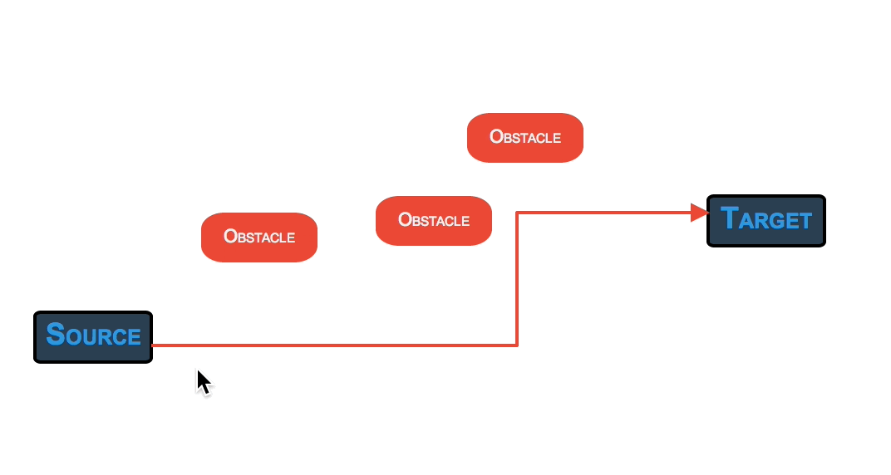

JointJS 0.9 Released May 13th, 2014
It's been a good amount of time since inital works on JointJS started. Since then, the core library and its plugin set grew tremendously. Today, we're proudly announcing another iteration of this work with a new release versioned JointJS v0.9.
Thanks go to the community, JointJS developers, contributors and our clients for pushing us further and giving us great input and contributions. Thank you!
This time, we've added smart link routing automatically avoiding elements and made our handy Geometry and Vectorizer helper libraries completely standalone, documented and ready to be used even outside JointJS.
New features
Smart link routing
We have refactored code responsible for routing and rendering links and made it completely pluggable. We have added
two smart routers (manhattan and metro) that automatically avoid elements that are in the way.

Link routing and rendering is now split in two parts: routers and connectors. routers
are responsible for returning a set of vertices that the link should go through. connectors take those
vertices and generate SVG path commands for rendering links. We now have three routers (manhattan, metro and orthogonal) and three connectors
(normal, smooth and rounded) to your disposal.
Read more about routers and connectors in the API reference for joint.dia.Link (in the Presentation section).
Also, make sure to check out the demo.
Geometry
This library has always been part of JointJS but we have extended it with new features and finally documented it. We also made this library completely standalone
so that it can be used in other projects as well (it is also compatible with NodeJS). The library contains a set of useful geometry operations on primitives (point, line, rectangle, ellipse) including
intersections, angle and length calculations and others. Examples are:
mypoint.theta(anotherPoint)
mypoint.manhattanDistance(anotherPoint)
point.fromPolar(r, angle, o)
myline.intersection(anotherLine)
myrect.sideNearestToPoint(aPoint)
myrect.containsPoint(aPoint)
myrect.pointNearestToPoint(aPoint)
myellipse.intersectionWithLineFromCenterToPoint(aPoint)
More on the Geometry library in the API reference. Feel free to download the Geometry library from the Download page. Note that this library is already packaged with JointJS and exposed via the global variable g.
Vectorizer
Another small but helpful library that we use internally in JointJS is Vectorizer. You can think of it as of a very lightweight jQuery (or better yet Zepto) for SVG. This
library doesn't have any dependencies and can also be used completely standalone. Vectorizer is only 3.5KB minified and gzipped.
var svg = V('svg');
var el = V('<g><rect/><text/></g>');
el.findOne('rect').attr({ x: 20, y: 20, width: 100, height: 40, fill: 'blue', stroke: 'black' });
svg.append(el);
document.body.appendChild(svg.node);
el.translate(20, 10);
el.scale(2);
el.rotate(45);
More on the Vectorizer library in the API reference. You can download it from the Download page. This library is also already packaged with JointJS and exposed via the global variable V.
Go grab it!
Download the JointJS code from the Download page. Watch our repository on GitHub or file bugs in the GitHub issue tracker. Follow us on Twitter.
Rappid toolkit update
Together with JointJS v0.9, we have also released a new version of our commercial plugin set, the Rappid diagramming toolkit. This time, we added two brand new plugins: Charts and BPMN shapes.
The joint.shapes.chart plugin brings flexible line, bar and area interactive charts to JointJS applications. Interestingly enough, charts are just another JointJS elements and so can be manipulated as such (connected with links to other elements, resized, rotated, drag&dropped, event put into Stencil or configured via Inspector!).

The joint.shapes.bpmn plugin is a set of Business Model and Notation (BPMN 2.0) shapes that you can use in your apps. Moreover, we have created a full-featured BPMN editor demo application that can be used as a foundation for your applications.

Thanks and Enjoy!